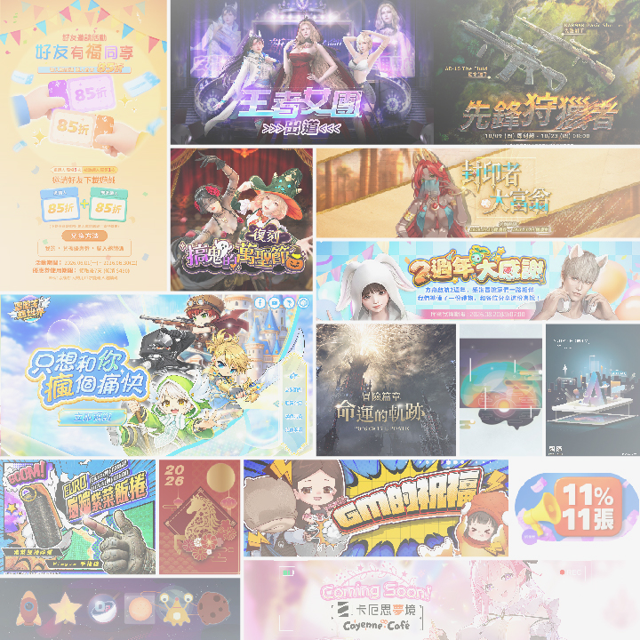
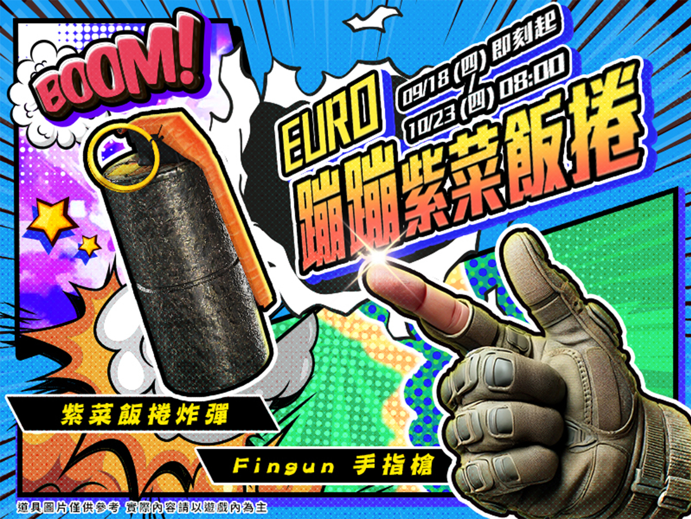
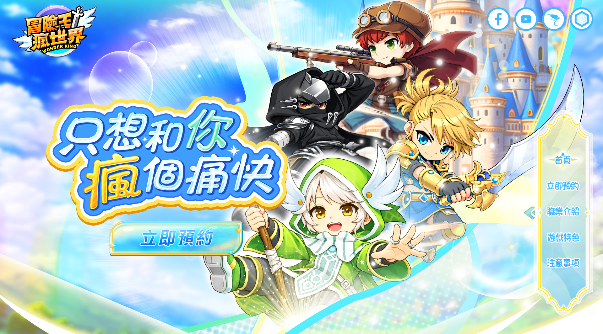
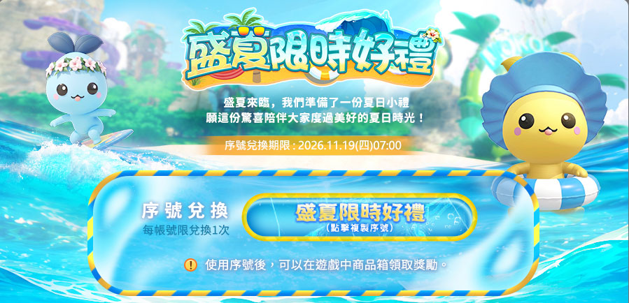
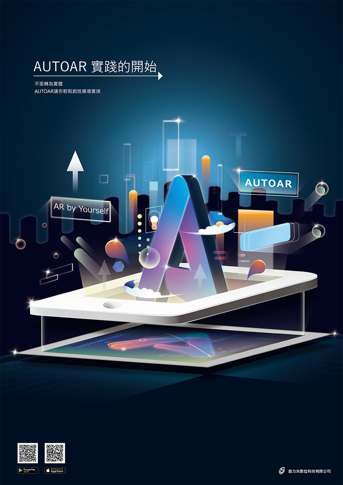

Banner 01 封面
BN09_1080x1080.jpg
BN09_1080x1080.jpg
遊戲Banner 作品
↗
橫跨 3D／2D 遊戲美術與平面視覺設計領域，持續探索不同形式的視覺表現。這裡收錄了過往的精選專案、設計作品與個人創作，呈現不同領域的視覺探索與實務經驗。

具備遊戲美術經驗與創作熱忱，重視溝通合作，持續探索跨領域設計的更多可能。
我是陳壹婷。大學時就讀數位媒體設計系，有遊戲企劃、遊戲美術與UI設計經驗，畢業後進入3D美術產業，主要工作為模型建模與材質貼圖繪製，下一階段進入遊戲公司，從事2D遊戲美術設計，製作遊戲行銷廣告banner以及活動網頁設計。
我喜歡設計，能夠配合該主題風格做出具有辨識度的視覺設計。
工作經歷：2020/10–2023/08 3D 美術設計師
工作經歷：2024/02–2025/03 美術設計
工作經歷：2025~ 平面美術設計
運用指定角色元素，設計出包含符合該視覺的主標題、按鈕、背景等整體視覺
目前顯示：每個分類前 2 件精選作品



